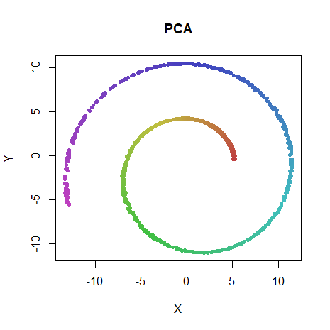
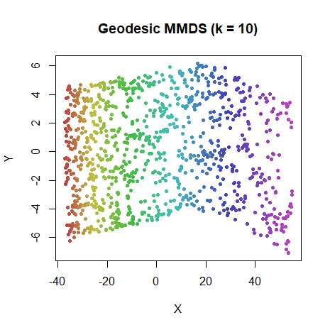
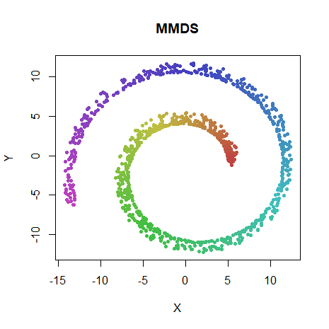
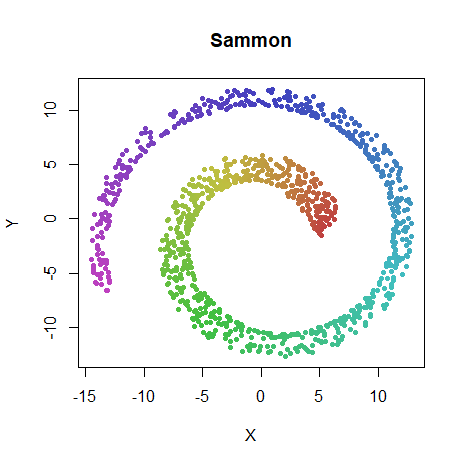
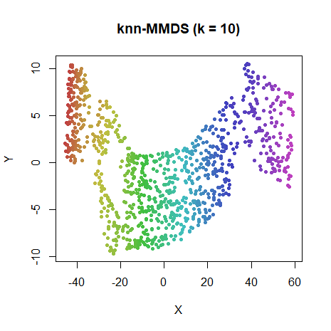
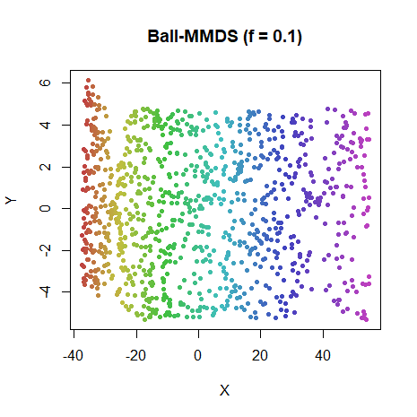

Metric MDS
(and other distance-preserving methods)
January 2, 2018
Source:vignettes/articles/mmds.Rmd
mmds.RmdThis article retains its original experiments and examples. For current package usage, see the usage guide.
Distance-preserving methods are one of the most straightforward way to think about embedding a dataset: just try and reproduce all the distances in 2D. The downside to this is that the distribution of distances in the input space is likely not a very good fit for two dimensions. Lee & Verleysen provide plenty of details in their paper on distance concentration.
So let’s not get our hopes up too much. But it’s always worth trying
one or more of these on a dataset, just to get a baseline if nothing
else. They are also included in smallvis as a way to ensure
that the code base was at least flexible enough to include methods that
weren’t straight variations on t-SNE.
At the very least, they are much easier to optimize than SNE. L-BFGS does very well. I’ve not ever noticed any of the problems that occurred with L-BFGS when used with t-SNE in terms of hitting ugly looking higher-lying minima with larger datasets. Although that’s probably because nothing looks all that great with these methods once we try larger datasets. But I find that the delta-bar-delta method, that seems to do such a good job with SNE and related methods, requires some tedious adjustment of the learning rate on a per-dataset basis to get it working. So L-BFGS comes recommended by me for these methods.
Methods
Metric Multidimensional Scaling
This method attempts to reduce the disparity between the input and output distances using a square loss. It’s pretty much the simplest differentiable loss function you could come up with. Not to be confused with other forms of MDS which allow other modifications of the distances (like scaling). There are a whole zoo of MDS methods out there, and I have found that the nomenclature is not always consistent.
Sammon Mapping
Sammon Mapping is perhaps the most commonly-mentioned of the distance-preserving embedding methods. It differs from metric MDS in that it applies a greater weight to shorter distances compared to longer distances. This is good because if we want some distances to be more preserved than others, it’s the short distances and hence neighborhoods. Unfortunately, the amount of weighting it applies turns out not to have a huge affect when it comes to distinguishing short from long distances in higher dimensions. Christopher Olah’s explanation is highly recommended.
Geodesic MMDS
The third method I want to look at is what I call geodesic MMDS, or
GMMDS. I’m sure this exists in the literature under a better name, I
just don’t know what it’s called. This method is like taking Metric MDS
but applying it to the ideas of Isomap:
instead of reproducing the Euclidean distances of the input space, use
the geodesic distances. The geodesic distances are estimated by Floyd’s
algorithm on the k-nearest neighbor distances, where k must be chosen by the user, making it a
user-adjustable parameter like the perplexity in SNE. Too low a value of
k leads to a disconnected graph, in
which case we use the Euclidean distance. smallvis will log
to the console when this happens. In the examples below, to avoid any
ambiguities about how many Euclidean distances are being used and
whether that’s affecting the results, the value of k was chosen to be sufficiently large to
ensure that the geodesic distances were always defined. There’s no
clever way to do this (at least, not in smallvis): I just
incremented the value of k by 5 until I
stopped seeing the message.
If a dataset consists of a low dimensional manifold, GMMDS should be able to “unfold” it, and in some sense better reproduce the underlying topology, although if the lower-dimensional manifold has more than two dimensions, we still can’t reproduce it fully as a 2D plot. There is a pre-canned synthetic dataset that is often used with these sorts of methods, which we will meet below.
Datasets
See the Datasets page.
Bonus Dataset: Swiss Roll
The Swiss Roll dataset (introduced, I think in the Isomap paper) is a 3D dataset where the points consist of a 2D sheet that’s been rolled up so it looks like… yes, a Swiss Roll. Look at the PCA plot in the results below and you’ll see the XY cross-section. Then imagine it extending in and out of the plane of the screen. The parameters of the swiss roll can be changed to give a more or less curled up result, so when looking at the results in various publications, you need to check how it was generated. I use the default parameters in the implementation in the snedata package, which in turn come from a paper describing Stochastic Proximity Embedding, where I first encountered the dataset. For the record, SPE, despite what its name sounds like, is a stochastic gradient descent-based approximation to metric MDS or GMMDS, rather than SNE.
You can generate your own 1,000-point swiss roll with:
swiss <- snedata::swiss_roll()Evaluation
A comparative visual inspection with the t-SNE results is instructive: see the results on the initialization page for instance. Also, it’s worth looking at the ASNE and SSNE results, which can be found on the SNE page, which should sit between these results and t-SNE in terms of successful embedding.
Apart from visualizing the results, the mean neighbor preservation of
the 40 closest neighbors is given on each plot labelled as
mnp@40 in the plots. But this is more out of habit than
because it’s particularly useful in this case. Unlike SNE results,
there’s no perplexity parameter in these methods, so no particular
reason that they should be attempting to reproduce the 40 nearest
neighbors, so treat this as a very rough proxy for well the data is
embedded.
Settings
Here’s an example of generating the results using the
iris dataset. For MMDS and GMMDS, values of
eta were chosen that showed decent behavior on the
iris dataset: convergence within 1000 iterations without a
hint of divergence, e.g. the error increasing during an “epoch”. These
settings were applied to the other datasets without any further
fiddling, so to be on the safe side, I allowed for double the number of
iterations (max_iter = 2000) than for t-SNE. As you will
note below, the value of eta chosen is several orders of
magnitude smaller than for t-SNE (where any value between 1-100 works
well). There’s no reason that the magnitude of these gradients should
resemble that of t-SNE, so that’s not surprising. It is possible that
the other settings in the delta-bar-delta method (the step size
decrease/increase, the momentum switch settings) should also be
changed.
In fact, these settings did need changing for Sammon mapping. Rather than fiddle yet more, I took my own advice and swapped to using L-BFGS for the Sammon map results. Comparing the DBD results with L-BFGS for some MMDS results suggested they produced very similar results.
For the gmmds results, the number of neighbors for each point (k in the discussion of GMMDS above) is
supplied as the perplexity parameter and was set to
10 except for iris and coil20,
which were set to 25 and 55, respectively, the
smallest multiple of 5 which didn’t lead to disconnections in the
geodesic estimate.
iris_mmds <- smallvis(
iris,
scale = FALSE,
Y_init = "spca",
method = "mmds",
ret_extra = c("dx", "dy"),
eta = 1e-5,
max_iter = 2000,
tol = 1e-8
)
iris_sammon <- smallvis(
iris,
scale = FALSE,
Y_init = "spca",
method = "sammon",
ret_extra = c("dx", "dy"),
opt = list("l-bfgs"),
max_iter = 2000,
tol = 1e-8,
epoch = 100
)
iris_gmmds <- smallvis(
iris,
scale = FALSE,
perplexity = 10,
Y_init = "spca",
method = "gmmds",
ret_extra = c("dx", "dy"),
eta = 1e-5,
max_iter = 2000,
tol = 1e-8
)Ball-MMDS and knn-MMDS
A limiting factor for the use of Isomap-like algorithms like GMMDS is that they require the geodesic distances to be calculated, which normally involves Floyd’s algorithm, which is O(N^3) in time complexity. Inspired by Stochastic Proximity Embedding, we could try another strategy to deal with long distances: ignore them unless they are too short. In terms of geodesics versus Euclidean distances, the Euclidean distance is always equal to or less than the geodesic distance, so it can be treated like a lower bound. In isometric SPE, distances outside the neighborhood of each point are only corrected if they become smaller than the input distance. From the perspective of MMDS, this is like only having pairs of points contribute to the cost function or the force constant matrix if they are neighborhood points or the output distance is smaller than the input distance.
Isometric SPE uses a fixed distance cutoff to define the neighborhood for each point: the 10% smallest distance of a random sample of distances from the entire dataset, i.e. a “ball” of fixed radius is assumed for each point. I refer to this method of defining the neighborhoods as Ball-MMDS. The obvious alternative is to use a symmetrized k-nearest-neighbor graph, which I refer to as knn-MMDS.
The advantage of either knn-MMDS or Ball-MMDS is that you don’t need as expensive an algorithm to prepare the input distances, but we do throw away long-distance information most of the time. This is not necessarily a bad thing, but relying on local data only to unfold a manifold may be harder work than using a full set of geodesic distances.
knn-MMDS and Ball-MMDS are intended as an approximation to GMMDS, so we won’t bother testing them out on anything other than the Swiss Roll (spoiler alert: it’s just not worth the effort given the performance of GMMDS).
I don’t have any particular literature references for knn-MMDS or Ball-MMDS, they are simply obvious (to me) implementations of SPE with the stochastic gradient descent optimization replaced by a typical batch optimization. No doubt there are literature precedents with better naming for both.
Results
For each dataset, PCA results are on the top left, GMMDS results are on the top right. On the bottom row are MMDS (left) and Sammon map (right). They’re arranged this way so that it’s easy to look directly down from the PCA results to the MMDS result to see the effect of that, and to demonstrate that the Sammon map and MMDS are very similar. For the Swiss Roll we’ll also look at Ball-MMDS and knn-MMDS, which will hopefully look like the GMMDS result. For Ball-MMDS, the fraction of all pair-wise distances (after sorting in increasing order) used to calculate the distance cutoff for each neighborhood is given as “f = 0.1”, i.e. using the 10% shortest distances. Setting “f = 1” would use all distances, and hence reproduce MMDS.
swiss
 |
 |
 |
 |
 |
 |
Ball-MMDS does a pretty good job of reproducing the GMMDS results. The knn-MMDS results are no-where near as good. The issue may be that choosing a fixed value of k but then symmetrizing the graph means that some points get more neighbors and hence more contribution in the gradient than others, which could cause these distortions. Other methods are discussed in the Conclusions.


Conclusions
At least you can say that running these methods does
something, compared to PCA. The datasets all show similar
behavior, but iris and swiss are outliers.
iris is well separated by PCA, and applying MMDS improves
matters further. This is a low-dimensional dataset that doesn’t need
your fancy-dan neighbor embedding methods. swiss is also
notable for being correctly unfolded by GMMDS, as we’d expect. We don’t
really see such a drastic difference for the other datasets, which
suggests that, if there are low dimensional manifolds lurking inside
them, they aren’t so low-dimensional that trying to reproduce the
geodesic distances is worthwhile.
In terms of the approximations to GMMDS I tried with
swiss, Ball-MMDS is much more successful than knn-MMDS. As
GMMDS isn’t that useful in general, I haven’t bothered looking into
exactly why knn-MMDS doesn’t do as well. The 10% cutoff used in
Ball-MMDS was also used successfully in the Stochastic Proximity
Embedding paper (which also successfully unrolls the Swiss Roll), which
is why I also used it here. But no motivation for that choice is given
in the SPE paper, and there doesn’t seem to be any good advice out there
for principled choice of a cut-off. At least the knn version, could
appeal to something like perplexity as used in SNE. Unfortunately, it
doesn’t do as well with a choice of k
that works perfectly well for GMMDS. Fortunately, as we shall discuss
more below, GMMDS doesn’t work so great that spending more time thinking
about and trouble-shooting cheaper ways to approximate GMMDS is worth
doing.
s1k does show some indication that GMMDS was having some
effect. There’s a hint of the ten overlapping clusters in the MMDS and
Sammon map plots, but it’s more obvious in the GMMDS result, which
renders them as less overlapping wedge shapes. It might instructive to
compare this plot with the ASNE and t-SNE plots which show a progressive
globularization of the clusters. If the distances could be somehow
stretched further, GMMDS might be a contender.
The olivetti faces dataset is about as well represented
by these methods as ASNE and SSNE manage. This may indicate that
oli should be considered one of the easier datasets to get
meaningful results from.
For the frey faces dataset. The GMMDS results seem to
show a better separation of the 3 rough clusters than the others or even
the ASNE or SSNE results. Conversely, for coil20, there’s
more discernable clustering with MMDS than with GMMDS.
Finally, for the larger datasets mnist6k and
fashion6k, all results are pretty hopeless. Barely any more
detail than PCA, just with the data expanded into a ball. GMMDS achieves
nothing over MMDS. Compare with the ASNE and SSNE results, which do a
better (although not brilliant) result.
MMDS and Sammon behave very very similarly across all datasets, especially when it comes to MNIST and Sammon map. No surprises there, see for example, Christopher Olah’s explanation. Nice to have it reconfirmed with some extra datasets here, though.
From this performance, distance-based embedding methods don’t seem all that useful for even moderate-sized datasets. In particular, the fascination that the Swiss Roll dataset exerts over researchers seems like a red herring: rather than a nice smooth low-dimensional manifold, most datasets seem more like MNIST: blobby and clustery, although MNIST admittedly seems to be unusually blobby and clustery. But I wouldn’t be surprised if geodesics are useful, even if not directly as in GMMDS. For example, see its use in this paper on intrinsic dimensionality calculations.